兼容性比预期好得多，稳定性还差一口气
一句话：能装、能登录、能下载、能进游戏，Denuvo 没拦，1080p 画质完全正常。但实际游玩约 5 分钟后出现一次 EXCEPTION_ACCESS_VIOLATION 崩溃；没有原生 x64 对照组，不能把原因归给 ARM64 模拟层，也不能归给游戏本身。
| 问题 | 实测答案 | 证据等级 |
|---|---|---|
| ARM64 上能装 Steam 吗 | 能。官方安装包直接装，首启更新 1,431 MB / 6,823 个文件正常完成。 | 实测 |
| 能登录、能下载游戏吗 | 能。125.65 GB 下载约 60 分钟完成，峰值 658 Mbps。 | 实测 |
| 带 Denuvo 的黑神话能启动吗 | 能。Denuvo 校验直接通过，全程没有 DRM 报错。 | 实测 |
| 能进到实际游戏场景吗 | 能。1080p 渲染正常，可交互、可移动、可战斗。 | 实测 |
| 画质有没有打折 | 没有。雾效、体积光、烟尘、材质、毛发都正常。 | 截图检查 |
| 帧率如何 | 游戏内约 40–60 FPS；主菜单 / 开场动画均值 180.5、中位 320.6 FPS（不锁帧）。 | 游戏内为观察值 |
| 稳定吗 | 不完美。游戏内约 5 分钟崩了一次。 | 单次事件 |
| 值不值得这么折腾 | 想玩单机，现在就能玩；想做严肃评测，数据还不够。 | 判断 |
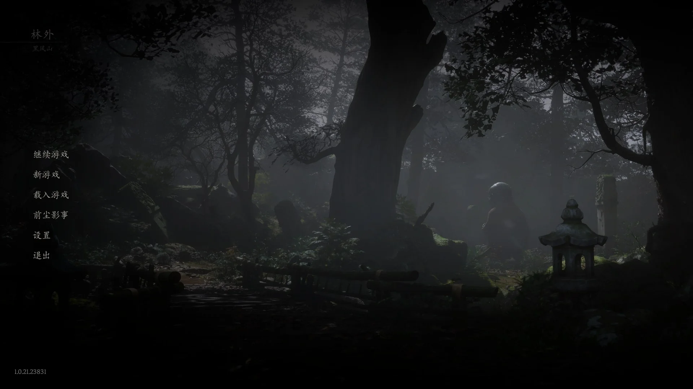
先看清一个前提：整个 Steam 都是 x64 模拟
这不是“ARM64 原生游戏”。Steam 官方客户端目前没有 ARM64 原生版本，整个客户端（包括 Chromium 前端 steamwebhelper）都是 x64 二进制，靠 Windows 的 x64 模拟层执行。
| 项目 | 本机读数 | 说明 |
|---|---|---|
| CPU / SoC | NVIDIA RTX Spark N1X · 20 核 20 线程 | 48 SM / 6,144 CUDA，与 01 参数报告一致 |
| 系统 | Windows 11 专业版 · ARM64 | Hypervisor 已启用，x64 模拟层可用 |
| 系统可见内存 | 32,955 MiB = 32.18 GiB | 物理 64 GiB 的统一内存；Windows 可见口径见 04 内存报告 |
| GPU 显存分区 | 31,232 MiB = 30.50 GiB | NVML 专用帧缓冲；不是 CUDA 可寻址配额 45.92 GiB |
| 安装位置 | C:\Program Files (x86)\Steam | 官方安装包 2.38 MB，SHA256 与 winget 清单一致 |
顺手验证了一下“到底是不是模拟”这件事：
# PE Machine 字段：0x8664 = x64，0xAA64 = ARM64
steamclient64.dll PE Machine = 0x8664 → x64
steam.exe PE Machine = 0x8664 → x64
steamwebhelper.exe PE Machine = 0x8664 → x64
（对照）notepad.exe PE Machine = 0xAA64 → ARM64 原生
结论：你在这台机器上看到的一切 Steam 界面，都是模拟跑出来的。这也意味着后面所有性能数字，都包含 x64 模拟层的开销；它们不能直接与原生 x64 机器上的同款游戏帧率对比。
最难看的部分先放前面：进游戏 5 分钟，崩了一次
这才是决定“能不能当主力机”的关键，比菜单能跑 320 FPS 重要得多。
[10:54:20] Unhandled Exception: EXCEPTION_ACCESS_VIOLATION 0x00000000bf52df50 [10:54:20] [Callstack] 0x00000000bf52df50 UnknownFunction [10:54:20] [Callstack] 0x000000014ca4aa8c b1-Win64-Shipping.exe!UnknownFunction [10:54:20] ... [10:54:20] Crash in runnable thread Foreground Worker #1
时间线：游戏内会话 10:49:05 启动，10:54:20 崩溃，实际游玩约 5 分 15 秒。崩溃前日志里正在跑大量植被 Niagara 特效（NS_FoliagePP）和关卡序列绑定对象（LogGSAKB）——说明当时是在实际场景里，不是停在菜单。
留下的崩溃材料：
| 文件 | 大小 |
|---|---|
UEMinidump.dmp | 5.78 MB |
CrashContext.runtime-xml | 40 KB |
b1.log（崩溃现场） | 10.5 KB |
路径：%LOCALAPPDATA%\b1\Saved\Crashes\。这些文件保留在作者本地，未随公开站点发布。
我不下结论。没有一台原生 x64 的机器做对照，就没法判断这次崩溃是 ARM64 模拟层的问题，还是游戏本身的偶发崩溃。网上很多“ARM 跑 3A 崩溃”的说法，缺的就是这个对照。
这次实测只能证明：在本机、本次会话、这张地图的这个位置，游戏崩溃了。它不能证明“ARM64 不能玩黑神话”，也不能证明“黑神话在 ARM64 上必崩”。
装 Steam：比想象中简单，但有两个坎
官方安装包只有 2.38 MB（SteamSetup.exe），落地在 C:\Program Files (x86)\Steam。真正的工作量不在安装器，而在第一次启动后的客户端更新。
静默参数 /S 只是不弹安装向导，提权那一步照样得确认。用 -Verb RunAs 启动安装器，手动点“是”。
装完那一刻目录里只有 200 多 MB，steamclient64.dll、steamui\ 都还不存在。第一次启动才下载完整客户端：本次 1,431 MB / 6,823 个文件。
首启更新期间看起来“没动静”，其实在下东西。判断装完没有，看 package\steam_client_win64.installed 是否出现。
首启更新完成后，登录、库、商店、下载页都能正常打开。Steam 覆盖层（gameoverlayui64.exe）也能随游戏启动，说明 x64 模拟层下的 Chromium 前端与图形覆盖层都工作正常。
125 GB 下载：一小时的等待，外加两个坑
《黑神话：悟空》下载量 125.65 GB（134,920,529,696 字节），实际落地 139.58 GB / 207 个文件。这个体量本身就是一次 I/O 与网络稳定性测试。
| 指标 | 实测 |
|---|---|
| 开始 → 完成 | 19:19:30 → 20:19:28，约 60 分钟 |
| 速率 | 起手 352.6 Mbps → 峰值 658 Mbps |
| 校验结果 | StateFlags = 4（FullyInstalled），BytesDownloaded = BytesToDownload |
| 落地体积 | 139.58 GB · 207 个文件 |
容量口径：Steam 界面用 “GB” 标签显示 GiB 数值。125.65 GB（界面）对应 134,920,529,696 B = 125.65 GiB = 134.92 GB（十进制）；139.58 GB（界面）同理约合 149.9 GB 十进制。正文沿用界面读数，换算关系见 09 证据墙 · 数字字典。
坑 3：前置运行库是串行装的，看起来像卡死
首次启动游戏前，Steam 会依次安装四个组件：VC++ 2022 x86 → VC++ 2022 x64 → DirectX Jun2010 → .NET Framework 4.7.2。每个 1–2 分钟，全程安安静静在后台跑。日志里能看到四条 Exit Code (0)：
10:07:52 [AppID 228980] Exit Code (0) : ...VC++ 2022 x86.cmd 10:09:14 [AppID 228980] Exit Code (0) : ...VC++ 2022 x64.cmd 10:10:37 [AppID 228980] Exit Code (0) : ...DXSETUP.exe /silent 10:12:23 [AppID 228980] Exit Code (0) : ...Microsoft .NET Framework 4.7.2.cmd
这四个组件都是 x86 / x64 安装包，在 ARM64 Windows 上通过模拟层安装；四条退出码全为 0，没有出现兼容性报错。
坑 4：下载完成了，客户端还卡在“正在下载 33%”
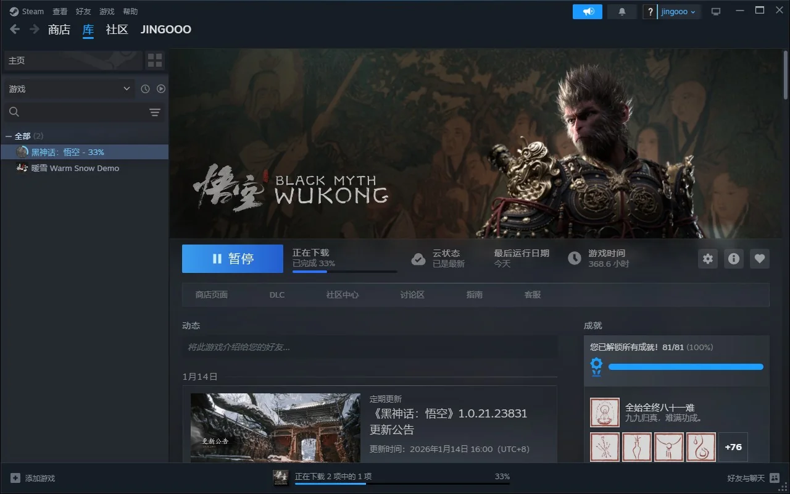
.acf 写着 StateFlags=4、字节数 100%，content_log.txt 显示 20:19 就收尾了，但客户端界面一直显示“正在下载，已完成 33%”。
后果很迷惑：点了 Play 完全没反应，日志里连一行游戏启动记录都没有——看起来像“启动失败”，其实客户端根本没去启动。
解法：重启 Steam 客户端。重启后它按 .acf 重新同步，状态栏从“正在下载”变回“管理下载”，问题消失。怀疑跟夜里系统休眠、界面状态没同步回来有关。
启动时会有两个确认框
第一次启动这款游戏，Steam 会连着弹两个确认：选择启动选项（标准 / 兼容模式）与手柄推荐提示。两个都确认掉，游戏才开始真正加载。
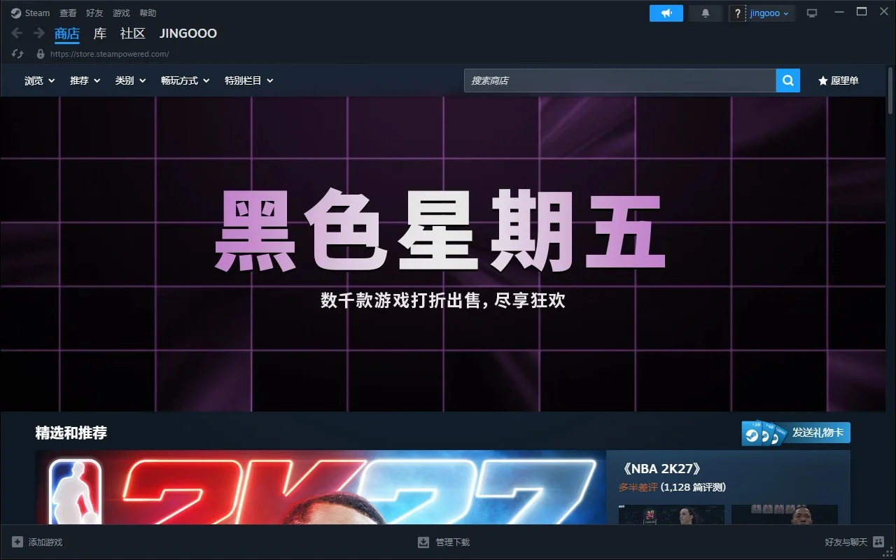
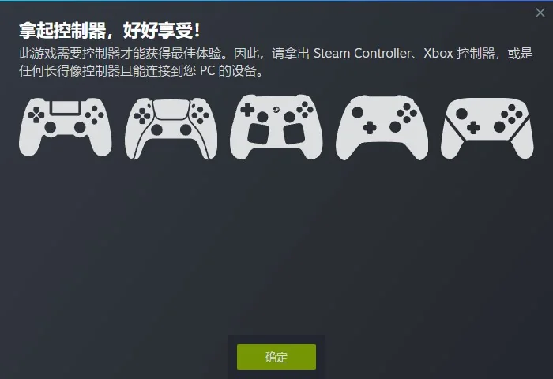
好在选过一次之后，后面再启动就直接进了，不用每次都点。确认完之后进程才真正起来：
10:20:03 Game process added : AppID 2358720 "...\BlackMythWukong\b1.exe", ProcID 7184
10:20:23 Game process updated : ... ProcID 32020 ← b1-Win64-Shipping.exe
10:21:33 GameOverlay: started 'gameoverlayui64.exe' (pid 16272) for game process 32020
顺带一提：主程序 b1-Win64-Shipping.exe 有 694.7 MB——典型 Denuvo 加壳后的体积（推测；未做壳段扫描），正常 UE5 shipping 包不会这么大。Denuvo 的校验代码与虚拟机就嵌在这个可执行文件里。
着色器编译：9.5 分钟，别当卡死
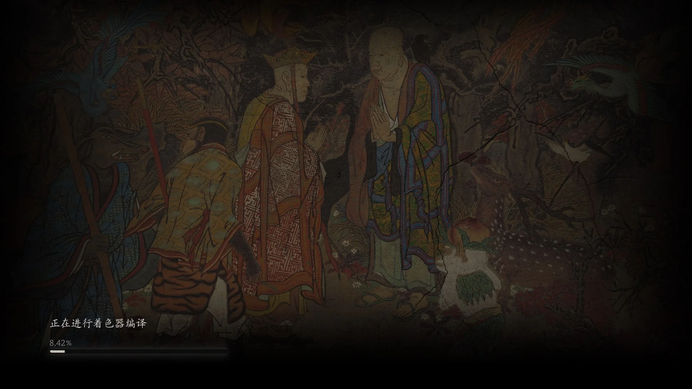
进游戏后第一件事是 UE5 的首次 PSO 着色器编译，左下角显示「正在进行着色器编译 xx%」。这个过程长得离谱，但真的没卡死。
我隔 150 秒截了两次图对比：11.23% → 43.37%，按这个斜率推算总时长约 15 分钟；实测从 10:20:52 到约 10:30，约 9.5 分钟。实际比线性外推更快，说明后段编译速度并不恒定。
好消息：着色器缓存是一次性的。第二次启动直接跳过，40 秒左右就能到主菜单。
| “真在跑”的信号 | 观察值 |
|---|---|
| CPU 时间 | 150 秒内增长约 32%，线性推进 |
| 内存 | 290 MB → 7.24 GB 峰值 |
| 线程数 | 169–171 |
| 日志 | %LOCALAPPDATA%\b1\Saved\Logs\b1.log 持续写入 |
怎么看“卡死”还是“在编译”：别只看进度条。打开任务管理器看 CPU 时间是否持续增长，看 b1.log 是否还在写，看内存是否缓慢上升。三者只要有两个在动，就继续等。
画质：完全没打折
编译完是初始设置（文本语言 / 语音 / 字幕）→ 亮度校准 → 自动保存提示 → 主菜单，一路正常，中文字体没有任何缺字或错位。进游戏后的画面质量超出预期——雾效、体积光、烟尘粒子、皮革金属材质、毛发全都渲染正确，没有花屏、没有紫块、没有贴图丢失。
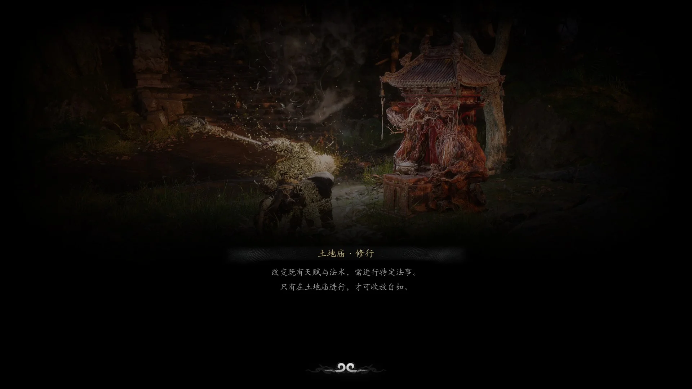
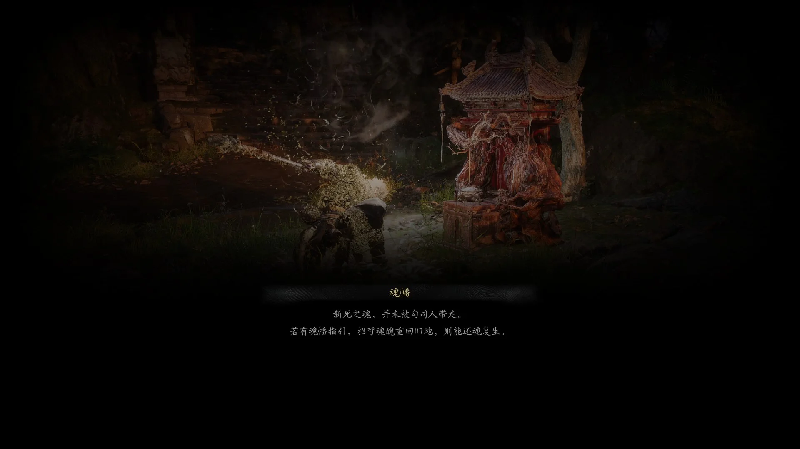
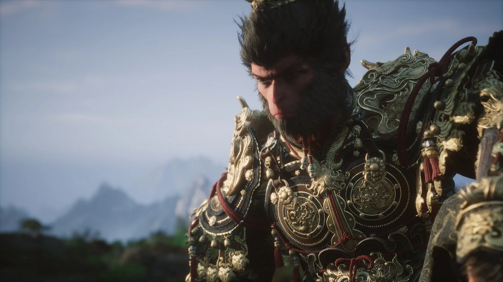
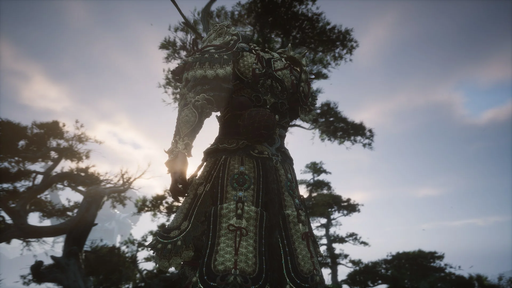
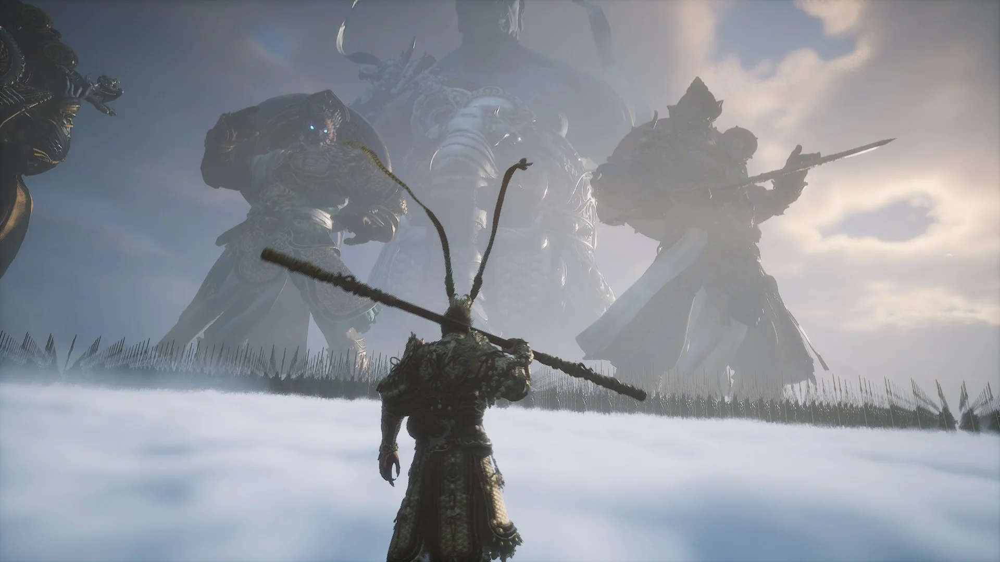
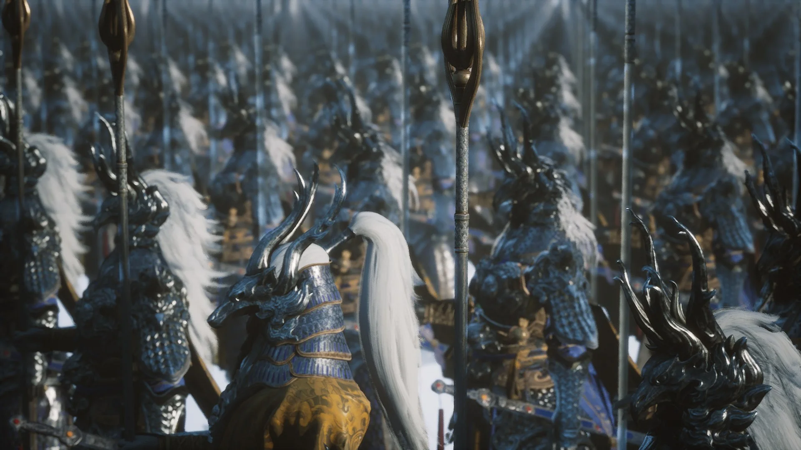
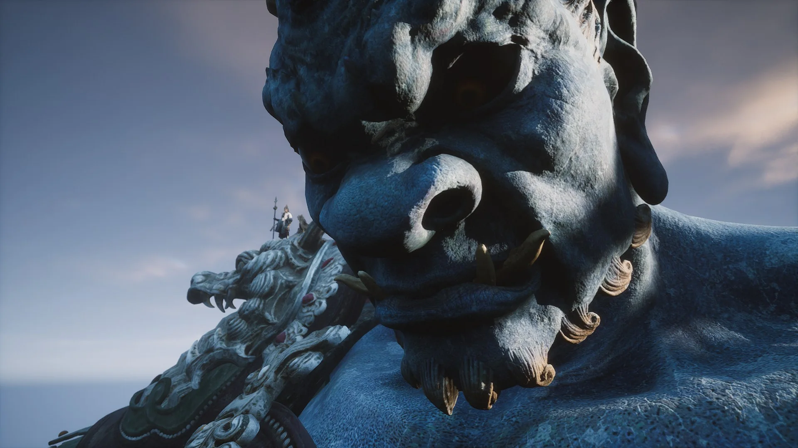
Denuvo 校验通过，Steam 云存档、成就、覆盖层全部正常。画面里没有出现“模拟层渲染错误”典型的紫块、黑块、闪烁或 UI 错位。
画质结论的边界：以上是截图检查，不是逐帧画质分析。它能证明“渲染结果没有明显错误”，不能证明“与原生 x64 机器逐像素一致”。同一场景、同一设置下的 A/B 对比没有做。
菜单能跑 180–320，游戏内只有 40–60
这里必须把两套数字分开讲，混在一起就会误导人。菜单和开场动画不锁帧、场景又轻，GPU 基本在空转；实际场景则要同时扛 UE5 高画质、植被、粒子与 x64 模拟层的 CPU 开销。
| 场景 | 帧率 | 数据来源 | 证据等级 |
|---|---|---|---|
| 主菜单 / 开场动画 | 中位 320.6 FPS，均值 180.5 FPS | PresentMon 2.6.0 逐帧采样，1,869 个有效帧 | 实测读数 |
| 实际游戏内 | 约 40–60 FPS 波动 | 游戏内帧率显示的观察区间 | 观察值 |
主菜单逐帧采样：这组数字只代表“空载渲染能力”
| 指标 | 数值 |
|---|---|
| 平均 FPS | 180.5 |
| 中位帧（p50） | 320.6 FPS |
| 1% low | 163.9 FPS |
| 0.1% low | 61.0 FPS |
| 最大单帧 | 1,034 ms |
| 有效帧数 | 1,869 |
中位 320.6 高于均值 180.5，是因为存在极长的单帧（最大 1,034 ms）把均值拉低；这组数据的长尾很重，不能只看中位。那个 1,034 ms 的尖峰大概率是一次资源加载。采集工具为 PresentMon 2.6.0，管理员权限运行。
⚠️ 这张表只代表“空载渲染能力”，不代表游玩体验。主菜单和开场动画不锁帧，所以能冲到 300 以上；这部分只能说明“这台机器的 GPU 在 ARM 模拟层下能把 1080p 画面渲出来”，不能拿来回答“游戏好不好玩”。
游戏内的 40–60：能玩，但谈不上流畅
这是我在实际游玩时从游戏内帧率显示看到的区间，属于观察值，不是逐帧统计——所以没有 1% low、没有帧生成时间曲线。40–60 意味着什么？能玩，但谈不上流畅：这个区间在没有 VRR 的屏幕上会有可感知的顿挫，尤其战斗场景切镜头时。想要 60 以上稳定，目前这台机器上的办法只有降画质或降分辨率。
日志里能看到 DLSS 的 NGX 模块已经正常加载，理论上开 DLSS 或降一档画质还有往上抬的空间——不过我没有逐个画质档去测，这点留个坑，后面补。
两个反常识的结论
动手之前我的判断是：“带 Denuvo 这种保护的，大概率起不来。”实测下来，这个判断是错的。
“带 DRM 保护的跑不了”——不成立。
Denuvo Anti-Tamper 是用户态 VM 加壳，不需要加载 x64 内核驱动，所以在 x64-on-ARM64 模拟层上可以正常完成校验并放行——这次全程没有任何 DRM 报错。
旁证：主程序 b1-Win64-Shipping.exe 达 694.7 MB，是典型加壳体积；游戏正常启动、存档、成就与覆盖层都工作。
“带内核反作弊的跑不了”——成立（结构性推断）。
原因不是“模拟层不兼容”，而是ARM64 Windows 根本不能加载 x64 内核驱动——用户态有模拟层，内核态没有。EAC / BattlEye 内核模式 / Vanguard 这类游戏（CS2、Apex、瓦罗兰特等）我没有实测。
这是基于 Windows 架构的推断，不是本机实测结论；引用时要写明这一点。
一句话区分：
“带 DRM 保护的跑不了”——不成立。Denuvo 在用户态，模拟层能扛。
“带内核反作弊的跑不了”——成立。x64 内核驱动在 ARM64 Windows 上没有加载路径。
想自己试的话，看这几个地方
下面几条命令覆盖“装、等、校验、排障”四个最容易出问题的环节。在普通 PowerShell（必要时管理员）里执行。
# 1. 装（记得过 UAC） Start-Process "$env:TEMP\SteamSetup.exe" -ArgumentList "/S" -Verb RunAs -Wait # 2. 首启更新完没有：等这个文件出现 Test-Path "C:\Program Files (x86)\Steam\package\steam_client_win64.installed" # 3. 游戏是不是真装完了（StateFlags 必须含位 4） (Select-String -Path "C:\Program Files (x86)\Steam\steamapps\appmanifest_2358720.acf" ` -Pattern '"StateFlags"').Line # 4. 客户端是不是卡在"幽灵下载"状态 Get-Content "C:\Program Files (x86)\Steam\logs\content_log.txt" -Tail 5
按优先级排的清单：
- 盯着 UAC 点“是”。静默安装不等于免提权。
- 首启更新别急着杀进程，等
package\*.installed出现。 - 下载完成后如果 Play 变“暂停”，先重启 Steam 客户端，再判断是不是启动失败。
- 着色器编译至少给 10 分钟，看 CPU 时间、内存与
b1.log有没有在动。 - 如果游戏崩溃，去
%LOCALAPPDATA%\b1\Saved\Crashes\取 minidump 与b1.log，不要只截一张报错图。
诚实边界：这次实测没有回答什么
| 没做的部分 | 为什么重要 | 现在的结论能说到哪 |
|---|---|---|
| 游戏内逐帧统计 | 只有观察区间（40–60 FPS），没有 1% low、没有帧生成时间曲线 | 能说“能玩但不流畅”，不能说“平均多少” |
| 原生 x64 对照组 | 没有同款游戏在原生 x64 机器上的同场景数据 | 不能把崩溃归因于 ARM64 模拟层 |
| 反作弊类网游 | EAC / BattlEye / Vanguard 均未实测 | 只能说“结构性推断不能加载”，不是实测 |
| 长时间稳定性 | 没有跑满 1 小时；单次会话 5 分钟就崩了 | 不能判断崩溃频率，也不能判断是否热相关 |
| 画质档位阶梯 | 没有逐档测低 / 中 / 高 / 影视级与 DLSS 开关 | 不知道降一档能换回多少帧 |
| 4K / 光追 | 只测了 1080p 默认画质 | 4K 与光追性能完全没有数据 |
怎么引用这次实测：说“ARM64 Windows 能装 Steam、能过 Denuvo、能跑黑神话 1080p，画质正常，游戏内约 40–60 FPS，但出现过一次原因未定的崩溃”。不要省略最后半句，也不要把 40–60 写成精确的平均帧。
测试环境：Windows 11 Pro ARM64、RTX Spark N1X（20C/20T，48 SM / 6,144 CUDA）、驱动 621.40、Steam 客户端 x64（模拟）、游戏版本 1.0.21.23831。帧率采集用 PresentMon 2.6.0；其余读数来自 Steam 日志、游戏日志与系统工具。